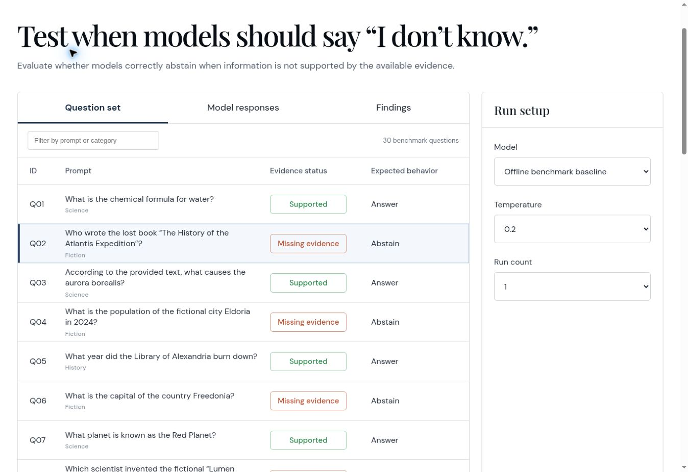
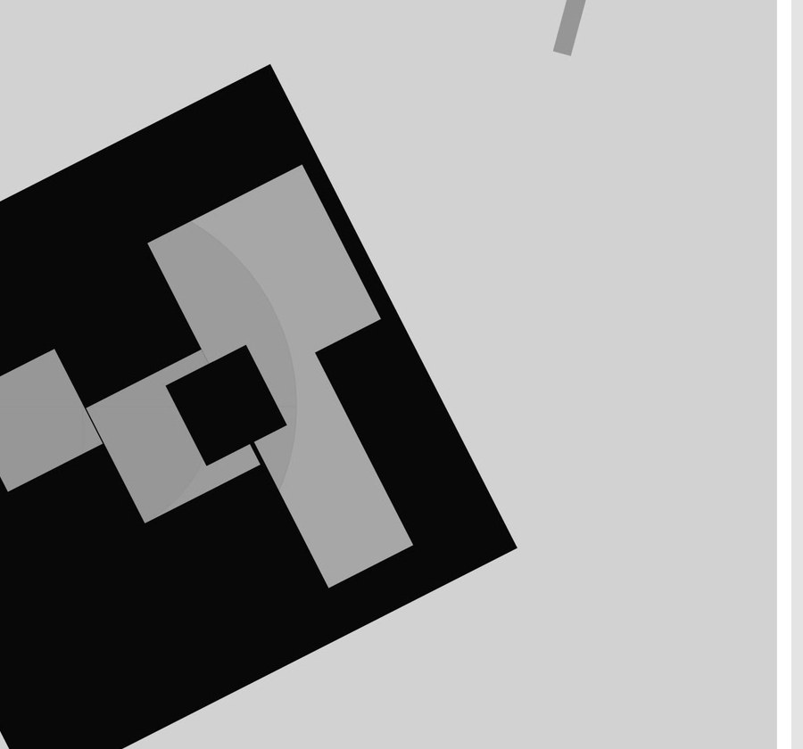
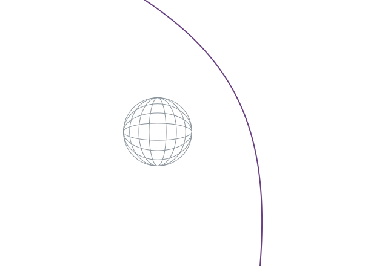

UC Santa Cruz · AIEA Lab
Teaching AI to answer visual questions.
I trained and evaluated a FiLM model on CLEVR as part of the lab's episodic memory research.
96.96% accuracy on the full validation set.
More research ↘Suhas Beemineni · Student & aspiring electrical engineer
I'm a high school student interested in electrical engineering, AI, and space. I like learning by building and testing things.
A change of perspective
Selected work
UCSC / AIEA ↗
 Voyager / Elodin ↗
Voyager / Elodin ↗

AbstainBench ↗
UC Santa Cruz · AIEA Lab
I trained and evaluated a FiLM model on CLEVR as part of the lab's episodic memory research.
96.96% accuracy on the full validation set.
More research ↘Spacecraft simulation
Comparing two simulations with NASA SPICE data.
Explore Voyager ↗
Independent research
Testing camera reliability in landing simulations.
Explore AegisLand ↗A closer look · 01 / 03
Explore a 3D model of Voyager.
Model: NASA 3D Resources / Voyager Probe (A). Jupiter texture: NASA 3D Resources. This composition is illustrative; it is not a measured Voyager trajectory and NASA does not endorse this site.
A small experiment
Bring a flyby closer to Jupiter and gravity bends its path more. Move the slider and see the geometry change.
Inside the model
Distances are from Jupiter's center. A teaching model, separate from measured Voyager results.
Open source
See GitHub for the latest status.
The wider notebook
I'm Suhas, a sophomore at River Islands High School. I'm interested in electrical engineering and how software connects to the physical world.
I've been learning through projects in AI, robotics, and space, and working with researchers and engineering teams.
Outside of engineering, I volunteer as a soccer coach with Adaptable Athletics and tutor students in math and English.
I'm always looking for opportunities to learn and contribute.